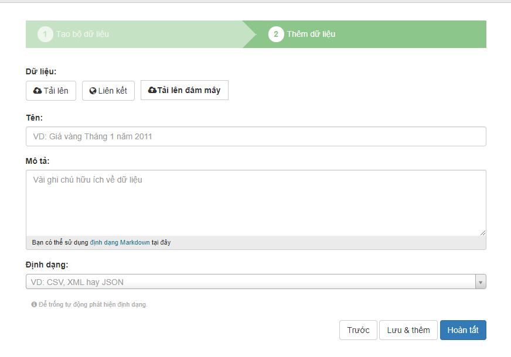
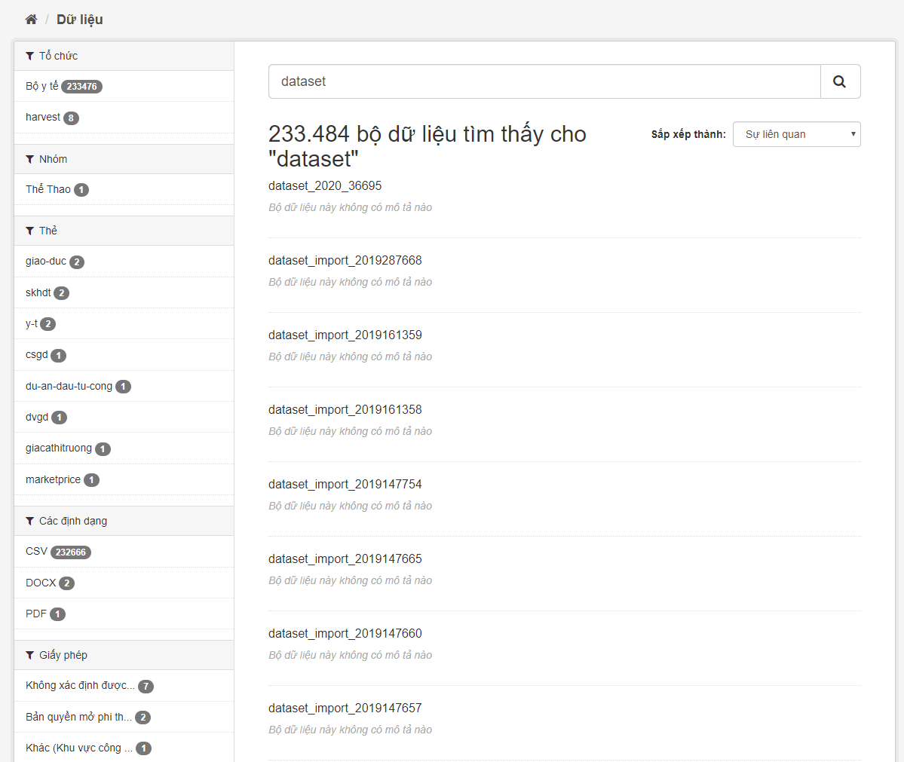
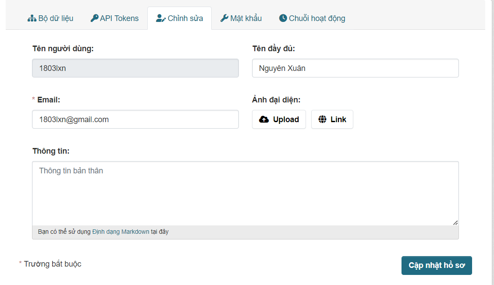

Hướng dẫn người sử dụng¶
Hướng dẫn sử dụng này bao gồm sử dụng giao diện web để tổ chức, xuất bản và tìm dữ liệu.
Một số tính năng UI web liên quan đến quản trị trang web chỉ khả dụng cho người dùng có phân quyền là sysadmin và đây là tài liệu trong Hướng dẫn sysadmin.
Người dùng, tổ chức và ủy quyền¶
Bạn có thể tìm kiếm dữ liệu mà không cần đăng nhập. Bạn có thể đăng ký tài khoản thành viên và đăng nhập.
Mỗi tập dữ liệu được sở hữu bởi một hoặc nhiều tổ chức. Ví dụ: Website được chính phủ sử dụng làm cổng thông tin dữ liệu, thì các tổ chức có thể là các cơ quan chính chủ khác nhau, mỗi cơ quan công bố dữ liệu. Mỗi tổ chức có thể có quy trình làm việc và ủy quyền riêng, cho phép tổ chức quản lý quy trình xuất bản của riêng mình.
Một quản trị viên của tổ chức có thể thêm người dùng vào tổ chức, với các vai trò khác nhau tùy thuộc vào mức độ ủy quyền cần thiết. Là thành viên trong một tổ chức có thể tạo một bộ dữ liệu thuộc sở hữu của tổ chức đó. Trong thiết lập mặc định, bộ dữ liệu này ban đầu là chế độ riêng tư và chỉ hiển thị cho thành viên khác trong cùng một tổ chức. Khi muốn công khai bộ dữ liệu thì yêu cầu một mức ủy quyền cao hơn trong tổ chức để thay đổi chế độ.
Nếu bộ dữ liệu không thuộc sở hữu của bất kỳ tổ chức nào, các bộ dữ liệu như vậy có thể được chỉnh sửa bởi bất kỳ người dùng đã đăng nhập vào.
Đăng ký và đăng nhập¶
Để tạo ID người dùng, sử dụng link "Đăng ký". Web sẽ yêu cầu như sau:
- Tên người dùng -- Các ký tự được sử dụng là chữ cái, số, và ký tự _ .
- Tên đầy đủ -- Sẽ được hiển thị trên hồ sơ của bạn.
- Thư điện tử -- Sẽ không hiển thị cho người dùng khác.
- Mật khẩu -- Nhập cùng một mật khẩu. Mật khẩu ít nhất có 8 ký tự.
Nếu có vấn đề với bất kỳ trường nào, chúng tôi sẽ cho bạn biết vấn đề và cho phép bạn sửa nó. Khi các trường được điền chính xác, chúng tôi sẽ tạo tài khoản người dùng của bạn và tự động đăng nhập.
Tính năng của người xuất bản¶
Tạo một bộ dữ liệu mới¶
Ghi chú
Bạn phải là thành viên của một tổ chức với vai trò là biên tập viên hoặc quản trị viên của tổ chức để thêm và chỉnh sửa các datsets. Xem phần Tạo một tổ chức dưới đây.
Bước 1. Bạn có thể truy cập "Thêm bộ dữ liệu" với hai cách:
- Chọn liên kết "Dữ liệu" ở đầu trang. Từ đây, chọn nút "Thêm bộ dữ liệu".
b) Chọn liên kết "Tổ chức" ở đầu trang. Chọn tổ chức sẽ sở hữu tập dữ liệu mới của bạn, chọn nút "Thêm bộ dữ liệu".
Bước 2. Để tạo bộ dữ liệu mới bạn cần cung cấp các thông tin cần thiết sau:
- Tiêu đề -- Tiêu đề này sẽ là duy nhất trên toàn web, vì vậy hãy đặt tên tiêu đề ngắn gọn nhưng cụ thể. Ví dụ, "mật độ dân số của Việt Nam theo khu vực" tốt hơn so với "Số liệu dân số".
- Mô tả -- Bạn có thể thêm mô tả dài hơn về bộ dữ liệu tại đây, bao gồm thông tin như dữ liệu đến từ đâu và bất kỳ thông tin nào mà mọi người sẽ cần biết khi sử dụng dữ liệu.
- Thẻ -- (Tags) Ở đây bạn có thể thêm các thẻ sẽ giúp mọi người tìm thấy dữ liệu và liên kết với các dữ liệu liên quan khác. Ví dụ: "Kinh tế", "giáo dục",...
- Giấy phép -- Thông tin giấy phép để mọi người biết cách có thể sử dụng dữ liệu.
- Tổ chức - Bạn chỉ được chọn các tổ chức mà bạn là thành viên của tổ chức đó.
- Hiển thị -- Có hai chế độ hiển thị "Công khai" và "Riêng tư". Bộ dữ liệu hiển thị chế độ "Công khai" sẽ được các thành viên không thuộc trong tổ chức hoặc người xem không có tài khoản xem bộ dữ liệu này. Ngược lại, hiển thị chế độ "Riêng tư" chỉ có các thành viên trong tổ chức và quản trị viên xem được bộ dữ liệu này.
Ghi chú
Theo mặc định, trường bắt buộc duy nhất trên trang này là tiêu đề. Tuy nhiên, bạn nên cung cấp đầy đủ thông tin để bộ dữ liệu hoàn thiện.
Bước 3. Khi bạn đã điền thông tin trên trang này, hãy chọn nút "Tiếp theo: Thêm dữ liệu".
Bước 4. Web sẽ hiển thị màn hình "Thêm dữ liệu".
Bạn có thể thêm một hoặc nhiều tài nguyên có chứa dữ liệu cho bộ dữ liệu này. Chọn tải một tệp từ máy tính hoặc liên kết cho tài nguyên dữ liệu của bạn hoặc tải dữ liệu lên đám mây.
Bước 5. Thêm thông tin khác, ở đây sẽ không yêu cầu thông tin này nhưng bạn nên thêm thông tin này:
- Tên -- Tên của tài nguyên này, ví dụ "Giá vàng tháng 01 năm 2011". Các tài nguyên khác nhau trong bộ dữ liệu nên có tên khác nhau.
- Mô tả -- Một mô tả ngắn về tài nguyên.
- Định dạng -- Định dạng tệp của tài nguyên, ví dụ CSV, XLS, JSON, PDF, v.v.
Bước 6. Sau khi hoàn tất các thông tin trên, bạn có thể lưu tài nguyên và tạo thêm một tài nguyên khác bằng chọn nút "Lưu & thêm". Nếu bạn muốn kết thúc quá trình thêm tài nguyên, chọn nút "Hoàn tất".
Bạn sẽ có thể tìm thấy tập dữ liệu của mình bằng cách nhập tiêu đề hoặc một số từ có liên quan từ mô tả vào hộp tìm kiếm dữ liệu. Để biết thêm thông tin về việc tìm kiếm dữ liệu, hãy xem phần Tìm kiếm dữ liệu.
Chỉnh sửa một tập dữ liệu¶
Bạn có thể chỉnh sửa tập dữ liệu bạn đã tạo hoặc bất kỳ tập dữ liệu nào thuộc sở hữu của một tổ chức mà bạn là thành viên. (Nếu một tập dữ liệu không thuộc sở hữu của bất kỳ tổ chức nào, thì bất kỳ người dùng nào cũng có thể chỉnh sửa tập dữ liệu này.)
- Di chuyển đến trang "Dữ liệu". Bạn có thể tìm thấy tập dữ liệu bằng cách nhập tiêu đề vào hộp tìm kiếm.
- Chọn nút "Quản lý".
- Hiển thị màn hình "Quản lý". Chỉnh sửa trực tuyến. Bạn có thể chỉnh sửa bất kỳ trường nào (Tiêu đề, Mô tả, v.v.), thay đổi chế độ hiển thị (Riêng tư/Công khai) và thêm hoặc xóa thẻ hoặc trường tùy chỉnh. Để biết chi tiết về các trường này, xem Tạo một bộ dữ liệu mới.
- Khi bạn đã hoàn tất, hãy chọn nút "Cập nhật bộ dữ liệu" để lưu các thay đổi.
Thêm, xóa và chỉnh sửa tài nguyên¶
- Chuyển đến trang "Quản lý" của bộ dữ liệu (các bước 1 - 2 ở trên).
- Chọn nút "Nguồn", có các tùy chọn để chỉnh sửa tài nguyên. Bạn có thể chọn một tài nguyên hiện có (để chỉnh sửa hoặc xóa) hoặc chọn "Thêm tài nguyên mới".
- Bạn có thể chỉnh sửa thông tin về tài nguyên hoặc thay đổi tệp. Để biết chi tiết, hãy xem các bước 4-5 của Tạo một bộ dữ liệu mới ở trên.
- Khi bạn chỉnh sửa xong, hãy chọn nút "Cập nhật tài nguyên" (hoặc "Thêm", đối với tạo tài nguyên mới) để lưu các thay đổi của bạn. Ngoài ra, để xóa tài nguyên chọn nút "Xóa".
Xóa một tập dữ liệu¶
- Chuyển đến trang "Quản lý" của bộ dữ liệu (xem Chỉnh sửa một tập dữ liệu ở trên).
- Chọn nút "Xóa".
- Hiển thị hộp thoại xác nhận. Để hoàn thành việc xóa bộ dữ liệu, hãy chọn "Xác nhận".
Ghi chú
Với "Xóa" bộ dữ liệu không hoàn toàn bị xóa. Bộ dữ liệu này bị ẩn, do đó, bộ dữ liệu này không hiển thị trong tìm kiếm, v.v. Tuy nhiên, bằng cách truy cập trang của bộ dữ liệu bằng URL, vẫn có thể nhìn thấy. Để xóa vĩnh viễn bộ dữ liệu, hãy liên hệ quản trị viên.
Tạo một tổ chức¶
Để tạo một tổ chức:
- Chọn liên kết "Tổ chức" ở đầu trang web.
- Chọn nút "Thêm tổ chức".
- Hiển thị trang "Thêm tổ chức".
- Nhập tên của tố chức và những thông tin bổ sung tùy chọn: Mô tả, hình ảnh cho trang chủ của tổ chức.
- Chọn nút "Tạo tổ chức". Sau tạo thành công, hiển thị trang chủ tổ chức vừa tạo. Ban đầu, tổ chức không có bộ dữ liệu.
Ghi chú
Trường hợp không được cấp quyền thêm tổ chức, hãy liên hệ với quản trị viên.
Quản lý tổ chức¶
Nếu được ủy quyền vai trò là quản trị viên tổ chức, trang hiển thị tổ chức đó sẽ hiển thị nút "Quản lý". Khi chọn nút "Quản lý" này sẽ hiển thị trang quản trị tổ chức, trang này có ba tab:
- Hiệu chỉnh -- Tại đây có thể chỉnh sửa thông tin của tổ chức (tên tổ chức, mô tả và hình ảnh).
- Dữ liệu -- Đây là nơi hiển thị tất cả bộ dữ liệu trong quyền sở hữu của tổ chức. Trong đây có các tính năng: Có thể chỉnh sửa chế độ hiển thị của bộ dữ liệu, xóa bộ dữ liệu, thêm bộ dữ liệu cho tổ chức và tìm kiếm bộ dữ liệu.
- Thành viên -- Tại đây có thể thêm, xóa và thay đổi vai trò truy cập cho những người dùng khác nhau trong tổ chức. Lưu ý: Khi thêm thành viên, cần phải biết chính xác tên tài khoản người được thêm, ngoài ra cũng có thể mời người dùng chưa là thành viên của web bằng cách nhập địa chỉ email người được mời.
Theo mặc định, cho phép các thành viên của các tổ chức có ba vai trò:
- Thành viên -- có thể xem bộ dữ liệu riêng tư của tổ chức
- Biên tập viên -- có thể chỉnh sửa và xuất bản bộ dữ liệu
- Quản trị viên -- có thể thêm, xóa và thay đổi vai trò cho các thành viên tổ chức
Tìm kiếm dữ liệu¶
Tìm kiếm trang web¶
Để tìm bộ dữ liệu, hãy nhập bất kỳ tổ hợp từ tìm kiếm nào (ví dụ: Y tế, Giao thông vận tải, v.v.) vào hộp tìm kiếm trên trang chủ và trên trang dữ liệu. Web sẽ hiển thị trang dữ liệu với các kết quả tìm kiếm của bạn.
Nếu có số lượng lớn kết quả,các bộ lọc có thể rất hữu ích, vì bạn có thể kết hợp các bộ lọc, thêm và xóa chúng một cách có chọn lọc, đồng thời sửa đổi và lặp lại tìm kiếm với các bộ lọc hiện có.
Tìm kiếm trong một tổ chức¶
Nếu bạn muốn tìm kiếm dữ liệu thuộc sở hữu của một tổ chức cụ thể, bạn có thể tìm kiếm các bộ dữ liệu trong tổ chức từ trang chủ của tổ chức đó.
- Chọn liên kết "Tổ chức" ở đầu trang web.
- Chọn tổ chức mà bạn muốn tìm kiếm bộ dữ liệu. Web sẽ hiển thị trang chủ của tổ chức.
- Nhập truy vấn tìm kiếm của bạn vào hộp tìm kiếm trên trang chủ của tổ chức. Kết quả tìm kiếm sẽ được trả về như bình thường, nhưng bị giới hạn ở bộ dữ liệu từ tổ chức.
Nếu bạn quan tâm đến một tổ chức, bạn có thể chọn để được nhận thông báo về các thay đổi đối với tổ chức đó (chẳng hạn như bộ dữ liệu mới và sửa đổi bộ dữ liệu) bằng cách sử dụng nút "Theo dõi" trên trang của tổ chức. Xem phần Trang tổng quan dưới đây. Bạn phải có tài khoản người dùng và đăng nhập để sử dụng tính năng theo dõi này.
Khám phá bộ dữ liệu¶
Khi chọn bộ dữ liệu, web sẽ hiển thị trang của bộ dữ liệu:
- Tên, mô tả và thông tin khác về bộ dữ liệu.
- Link và mô tả ngắn gọn về từng tài nguyên.
Các mô tả tài nguyên liên kết đến một trang dành riêng cho mỗi tài nguyên. Trang tài nguyên này bao gồm thông tin về tài nguyên và cho phép tải về. Nhiều loại tài nguyên cũng có thể được xem trước trực tiếp trên trang tài nguyên: Spreadsheets .CSV và .XLS (được xem trước trong chế độ xem dạng lưới), với chế độ xem bản đồ và đồ thị có sẵn nếu dữ liệu phù hợp, hình ảnh, PDF hoặc HTML.
Trang dữ liệu cũng có hai tab khác:
- Chuỗi hoạt động -- xem lịch sử các thay đổi gần đây của bộ dữ liệu
- Nhóm -- xem các nhóm được liên kết với bộ dữ liệu này
Ngoài ra có các tính năng:
- Đánh giá -- đánh giá dữ liệu có hữu ích hay ngược lại
- Bình luận -- bình luận ý kiến cá nhân về bộ dữ liệu
- Theo dõi -- nhận thông báo về các thay đổi đối với bộ dữ liệu.
Xem phần Trang tổng quan dưới đây. Bạn phải có tài khoản người dùng và đăng nhập để sử dụng các tính năng trên.
Thông tin cá nhân¶
Ghi chú
Bạn phải có tài khoản đăng nhập để sử dụng tính năng này.
Trang tổng quan¶
Bảng điểu khiển hiển thị 4 tab:
- Tin tức -- Hiển thị nguồn cấp thông tin của bạn. Điều này cho thấy các thay đổi đối với các bộ dữ liệu mà bạn theo dõi và mọi bộ dữ liệu đã thay đổi hoặc mới trong các tổ chức mà bạn theo dõi. Nếu bạn muốn dừng theo dõi tập dữ liệu (hoặc tổ chức hoặc người dùng), hãy truy cập trang của tập dữ liệu (ví dụ: bằng cách chọn một liên kết đến tập tin đó trong 'Tin tức' của bạn) và chọn nút "Không theo dõi".
- Bộ dữ liệu của tôi -- Hiển thị tất cả bộ dữ liệu của bạn.
- Tổ chức của tôi -- Hiển thị tất cả tổ chức mà bạn là thành viên.
- Nhóm của tôi -- Hiển thị tất cả nhóm mà bạn là thành viên.
Quản lý hồ sơ cá nhân¶
Chọn nút "Cấu hình hồ sơ" trong Trang tổng quan. Bạn có thể thay đổi thông tin cá nhân (trừ "Tên tài khoản") bao gồm: Tên đầy đủ, Email, ảnh đại diện, thông tin (giới thiệu về cá nhân). Thực hiện các thay đổi và sau đó chọn nút "Cập nhật hồ sơ".
